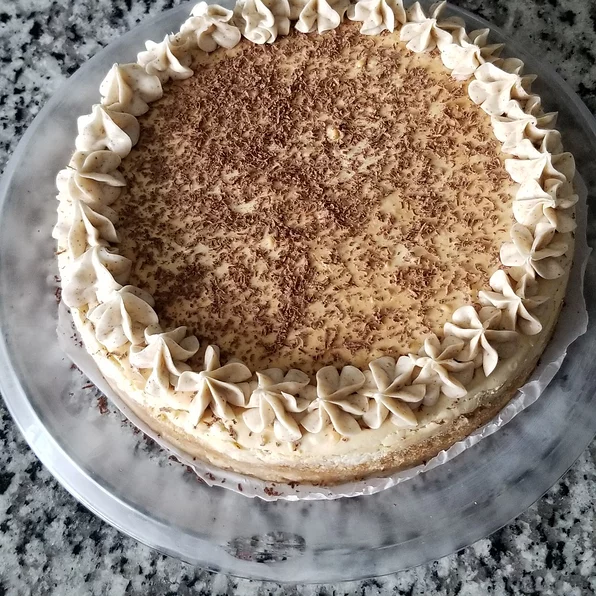

Tiramisu Cheesecake

About this dish
Tiramisu-flavored cheesecake combines the flavors and richness of tiramisu and New York Cheesecake. Just before serving, grate some semisweet chocolate on the top.
Ingredients
- 12-ounce of ladyfingers
- 1/4 cup butter, melted
- 1/4 cup coffee-flavoured liqueur, divided
- 3x 8-ounce packages cream cheese
- 1x 8-ounce container mascarpone cheese
- 1 cup white sugar
- 2 eggs
- 1/4 cup all-purpose flour
- 1x 1-ounce square semisweet chocolate
Cooking Directions
- Preheat oven to 350 degrees F (175 degrees C). Place a pan of water on the bottom of the oven.
- Crush the package of ladyfingers to fine crumbs. Mix the melted butter into the crumbs. Moisten with 2 tablespoons of the coffee liqueur. Press into an 8-inch springform pan.
- In a large bowl, mix cream cheese, mascarpone, and sugar until very smooth. Add 2 tablespoons coffee liqueur, and mix. Add the eggs and the flour; mix slowly just until smooth. Pour batter over crust in the springform pan.
- Place pan on middle rack of oven. Bake until just set, 40 to 45 minutes. Open oven door, and turn off the heat. Leave cake to cool in oven for 20 minutes. Remove from oven, and let it finish cooling, about 30 minutes. Refrigerate for at least 3 hours, or overnight.
- Grate semisweet chocolate over the top right before serving.
Additional Notes
- If the cheesecake batter is too thick in step 3, add a little cream.
- Aluminum foil can be used to keep food moist, cook it evenly, and make clean-up easier.